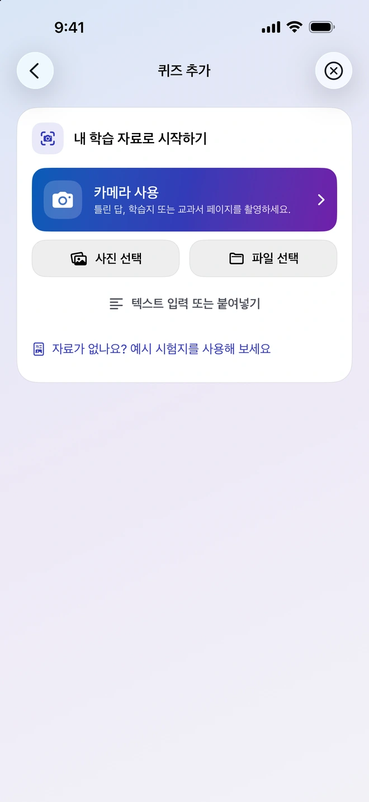
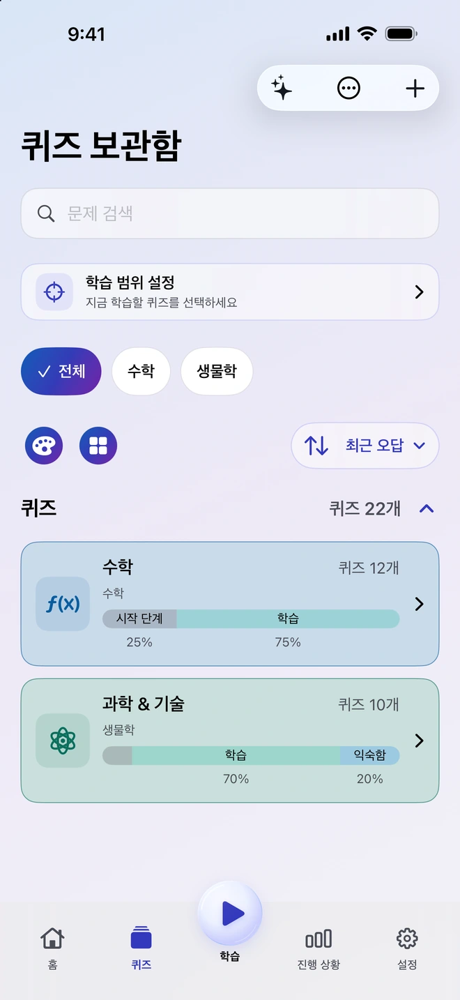
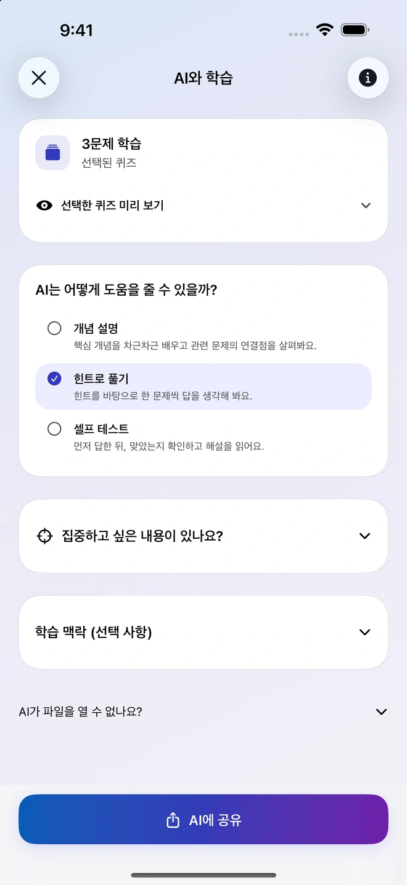
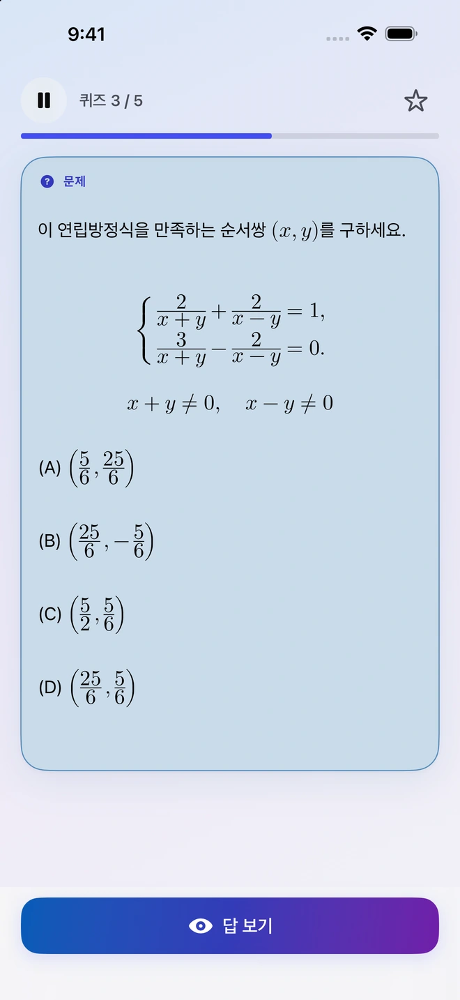
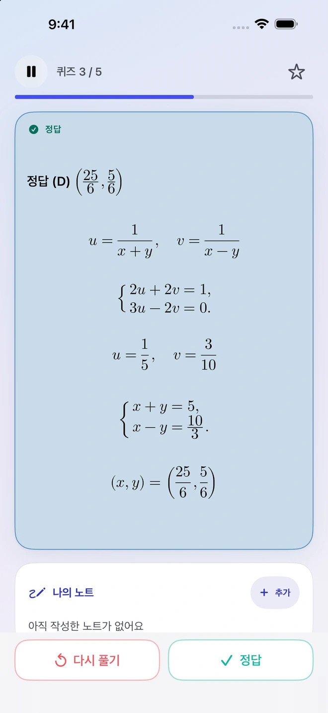
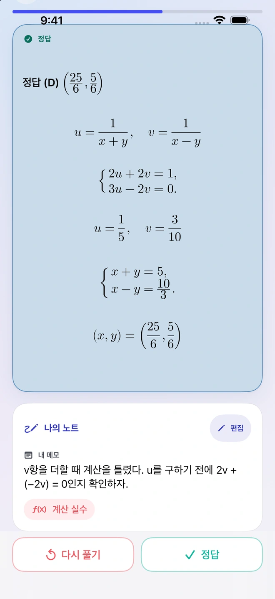
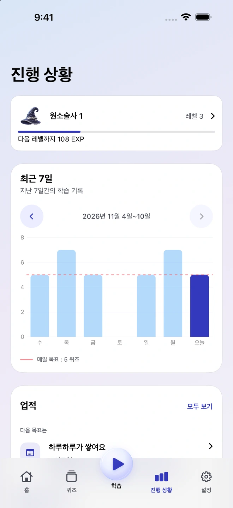

내 자료로 문제 만들기
사진, PDF, 문서 또는 노트를 추가하세요. Quiz Invoker가 자료와 문제 작성 지시문을 준비하면, 원하는 호환 외부 AI 앱을 골라 공유할 수 있어요. 돌려받은 문제를 검토하고 가져온 뒤 필요한 문제만 보관함에 넣으세요.
iPhone용 학습 앱
교과서 한 페이지, 필기한 내용, 틀렸던 문제에서 시작해 보세요. Quiz Invoker에 자료를 가져오고, 남겨 둘 문제를 골라 다음 복습에 활용할 수 있어요.
사용 방법 보기

나에게 필요한 문제를 모아 두고, 시간이 지난 뒤 다시 풀어 보세요.
사진, PDF, 문서 또는 노트를 추가하세요. Quiz Invoker가 자료와 문제 작성 지시문을 준비하면, 원하는 호환 외부 AI 앱을 골라 공유할 수 있어요. 돌려받은 문제를 검토하고 가져온 뒤 필요한 문제만 보관함에 넣으세요.
선택한 문제를 원하는 외부 AI 앱에 공유하세요. 개념 설명이나 단계별 힌트를 부탁하거나, 이해한 내용을 확인해 볼 수 있어요. 어떤 파일이나 메모를 보낼지는 직접 정해요.

먼저 스스로 풀고, 정답을 본 뒤 얼마나 잘 기억했는지 돌아보세요. 막힌 부분을 메모해 두면 다음에 같은 문제를 만났을 때 확인할 수 있어요.


진행 상황에서 최근 7일간의 복습량과 하루 목표를 확인할 수 있어요. 메모는 문제와 함께 남아 정답과 그때의 생각을 같이 살펴볼 수 있어요.


Quiz Invoker 계정 없이도 오프라인에서 문제를 정리하고 복습할 수 있어요. 공유할 파일과 지시문은 기기에서 준비되고, 보낸 자료는 직접 고른 외부 AI 앱에서 처리돼요.